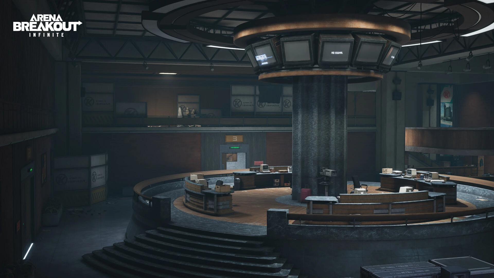
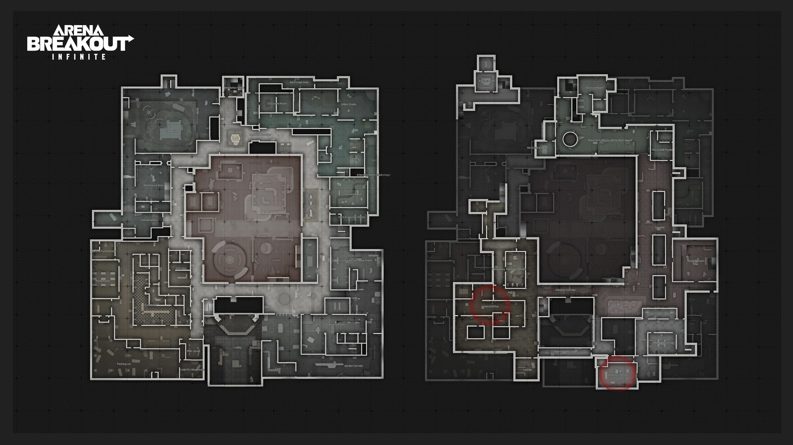

1. Vue d'ensemble
TV Station est la carte l'intérieur parfait : couloirs étroits, niveaux superposés, trois points chauds par raid. Les lignes de vue courtes punissent les armes longues — ici, c'est P90, Vector, shotgun.
2. Hotspots
- Salle de contrôle — documents boxes (blueprints) et tiroirs.
- Studios d'antenne — loot électronique premium.
- Broadcast bay — coffres occasionnels, armes spawn fréquent.
- Sous-sol câbles — itinéraire de rotation ; rarement loot, toujours tactique.
3. Les trois boss de la station
| Boss | Style | Contre |
|---|---|---|
| Kurt | AR lourd + explosifs | Grenades stuns, flanquer, jamais frontal |
| Rolf | Mêlée rapide et mortelle | Espace + shotgun, jamais acculé |
| Bernard | Sniper ultra précis | Fumées, angles multiples, ne jamais peep la même fenêtre 2 fois |
Les trois boss de TV Station — ce que dit l'éditeur
La distinction entre ce que l'éditeur a dit et ce que la communauté rapporte compte. Le tableau ci-dessous s'appuie sur la revue exhaustive des 483 publications de MoreFun Studios menée au 1er novembre 2026 : chaque nom de boss vient d'une publication officielle datée.
| Nom | Statut | Ce que l'éditeur en dit |
|---|---|---|
| Kurt | Nommé boss par l'éditeur | Chef des boss de TV Station, « heavy assault weapons and explosives ». Repérable à son AUG au laser bleu-violet, chargeurs tambour de 60 coups et munitions T4. Casque T5 03 Heavy ou IND200 T4. Jeton : Combat Compass. Ses gardes manient des ACE31 en PS et portent des harnois T5 H-Tac A8. |
| Rolf | Nommé boss par l'éditeur | « Fast and deadly with melee ». L'éditeur le décrit comme le boss de TV Station qui charge au corps à corps — c'est ce qui le distingue des deux autres. |
| Bernard | Nommé boss par l'éditeur | « A highly accurate sniper ». Utilise un M110 en M80 T4 et un G18 en AP6.3. Harnois TM2 ou T6 Tactical Armored Rig, casque audio GS2. Très précis, dangereux à toute distance. Jeton : Airborne Badge. Ses gardes manient des Mini 14 modifiés en M855. |
Trois boss d'un coup
TV Station est la seule carte où l'éditeur a nommé plusieurs boss pour la même carte : Kurt, Rolf et Bernard ont été présentés ensemble le 27 avril 2025, et l'éditeur a précisé qu'ils pouvaient apparaître simultanément. En Saison 6, en Hostile Sector, les trois étaient réellement possibles dans un même raid — mais le Hostile Sector n'est pas disponible en S7. Le Boss Rally, lui, reste un événement de Forbidden Zone : plusieurs boss apparaissent alors sur la carte, sans qu'aucune probabilité ne soit publiée.
4. Tactique
- Jamais seul : TV Station punit l'isolement — chaque couloir de 5 m peut cacher 2 squads.
- Pre-aim à hauteur de tête : l'encadrement des portes = 70 % des duels.
- Grenade + push : le combo roi en raid TV.
Timing TV
Arrivez en avance de raid pour piller les zones calmes, ou arrivez à T+10 quand les squads s'entre-tuent (le « third-party harvest »).
Zones officielles
Libellés relevés sur la carte officielle du jeu : ces noms sont ceux affichés en jeu et repris par les codes-cle.
- Live Broadcast Room
- Auditorium
- Couloir d'exposition
- Lobby
- Cafeteria
- Archive Room
Points d'extraction officiels
Liste exhaustive des sorties de la carte (noms de jeu). Les extractions vertes sont fixes ; les autres dépendent d'un vehicule, d'un abonnement ou d'une zone Nanotech.
- Elevator
- Loading Dock
- Main Entrance
Clés de la carte
Chaque clé s'use à l'usage : 1 point en Normal, 2 en Lockdown, 3 en Forbidden. Une clé à 45 de durabilité tient donc beaucoup moins longtemps en Forbidden.
| Clé | Durabilité | Débloque |
|---|---|---|
| 2F Directors Office Card | 30 | non documenté |
| 2F General Office Key | 30 | non documenté |
| Post-Production Room Key | 30 | non documenté |
| Editing Room Key | 30 | 1 Electric Safe 1 Office Drawer 1 Storage Case |
| Darkroom Key | 45 | non documenté |
| Infirmary Key | 45 | non documenté |
| Planning Room Key | 30 | non documenté |
Les clés marquées non documenté sont bien présentes sur la carte et leur durabilité est vérifiée, mais le wiki officiel ne documente pas encore les conteneurs qu'elles ouvrent. Considérez-les comme des accès à une zone précise plutôt que comme des clés de loot garanti.
Boss de la carte
Bernard Martin, Kurt Williams — spawn parmi les points d'intérêt : approchez avec une armure T3 minimum et surveillez le tour de garde.
Cartes interactives
Cartes de référence
Deux ressources de référence pour aller plus loin que cette page :
- ABIBuilder — catalogue des cartes (nouvel onglet) : spawns, clés et stats de loot par carte.
- TCNO — carte interactive de TV Station (nouvel onglet) : survol des zones, marqueurs d'extraction et de loot.